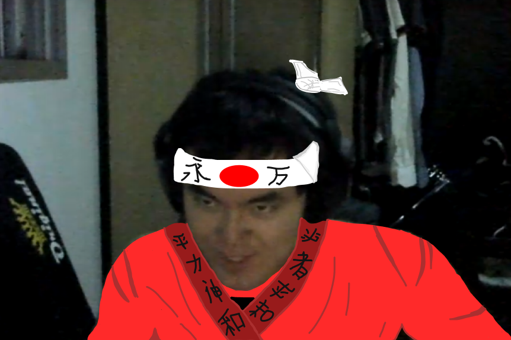

Nossas Unidades
UNIDADE JARDINS
Alameda Lorena, 138 - Jardins
(Seg a Sex): 12h às 15h / 19h às 00h
(Sáb/Dom/Feriados): 13h às 16h / 19h às 00h
UNIDADE VILA MARIANA
Av. Dr. Altino Arantes, 795 - Vila Clementino
(Seg a Sex): 12h às 15h / 18h30 às 00h
(Sáb/Dom/Feriados): 12h às 16h / 18h30 às 00h

UNIDADE SHOPPING CENTER 3
Av. Paulista 2064, Loja C02 - Piso Cinelândia
(Seg a Dom): 12h às 22h
Sobre o Sushiki
Sushiki significa "período do sushi" em japonês
E este é o resultado da união de 3 profissionais, todos com mais de 20 anos de experiência. O chef Takano Yuji, mais conhecido como Chef Yudax, está à frente da cozinha do Restaurante. Trabalhou no clube do Sushi em São Paulo, mas o gosto pela culinária japonesa começou no antigo restaurante japonês Mioko. Depois disso, sua trajetória ganhou destaque no restaurante Nakombi, onde atuou por nove anos consecutivos ao lado de chefs internacionais.
